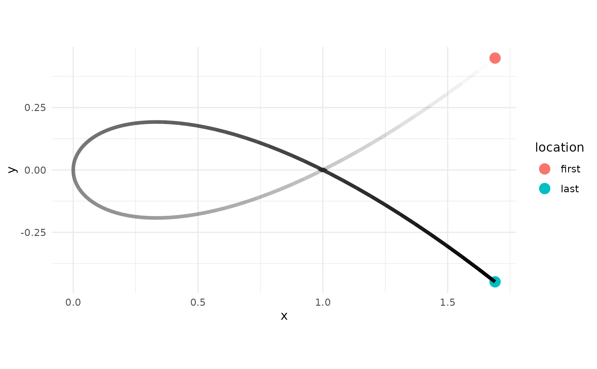
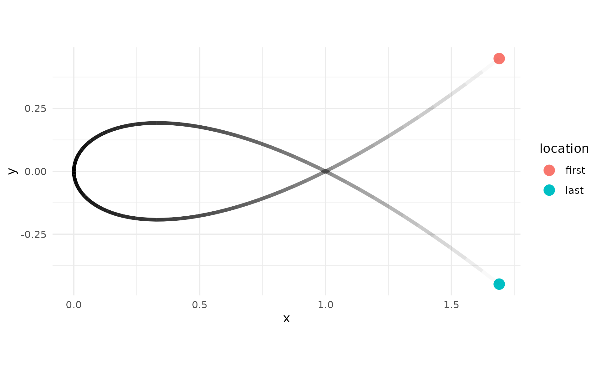
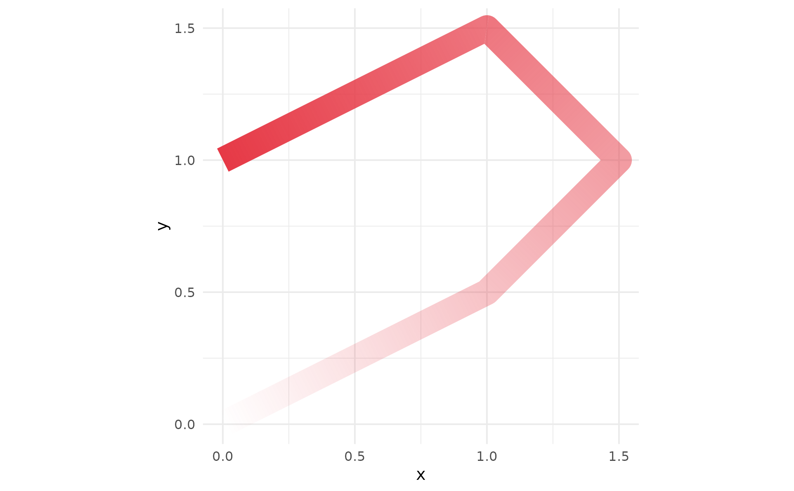
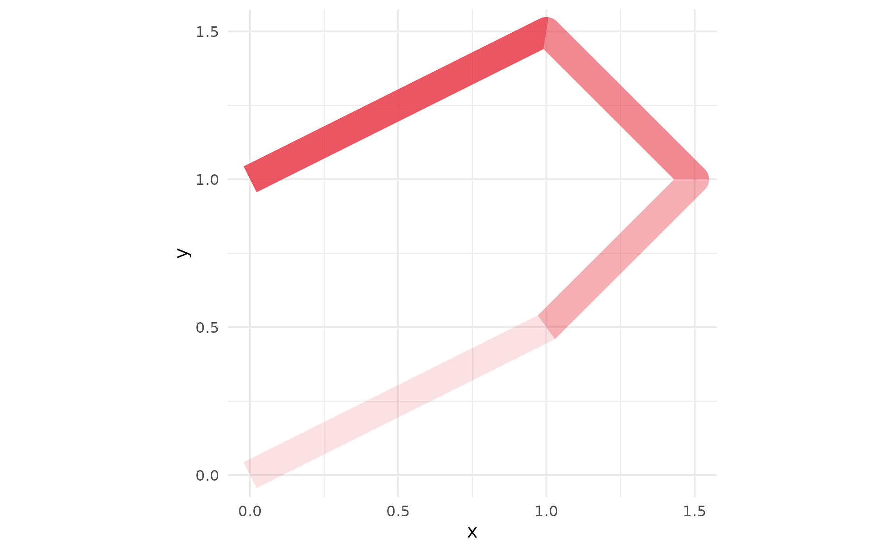
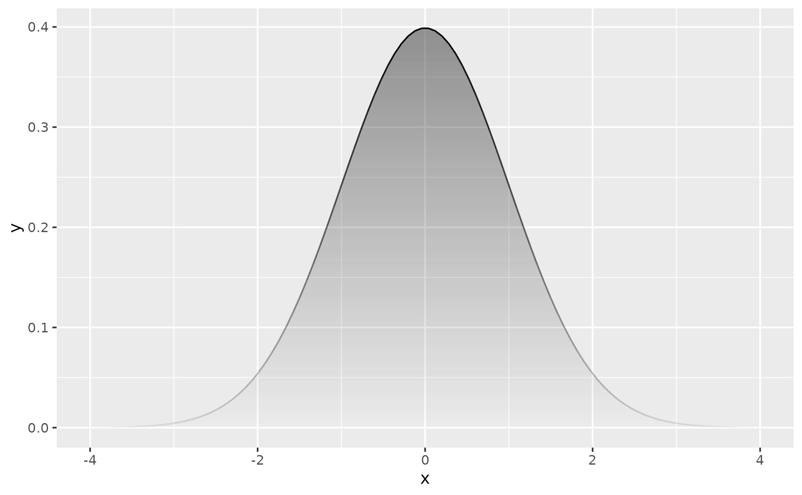
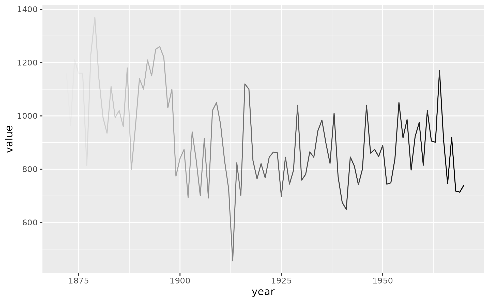
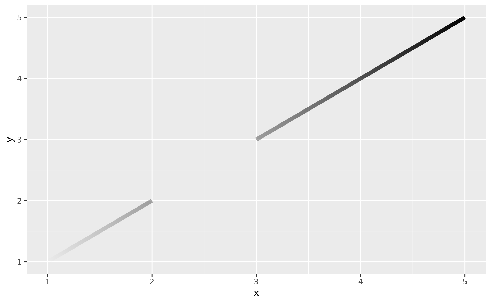
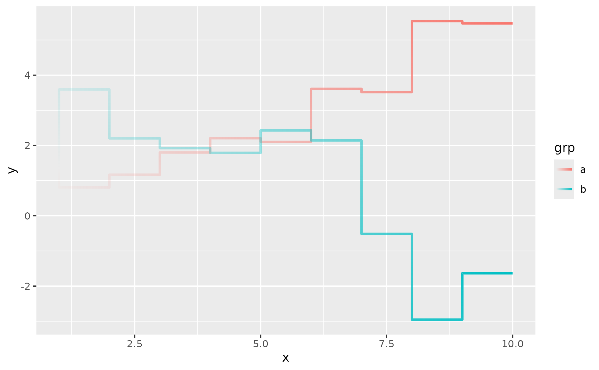

Paths and Lines with a Fading Gradient
Source:R/geom-path-fade.R, R/geom-line-fade.R, R/geom-step-fade.R
geom_path_fade.Rdgeom_path_fade() connects observations in the order they appear in the
data (like ggplot2::geom_path()) and applies a linear alpha gradient so
that one or both ends of the path fade to transparent.
geom_line_fade() is identical to geom_path_fade() but sorts
observations by x before drawing (like ggplot2::geom_line()).
geom_step_fade() is identical to geom_path_fade() but draws a
staircase-step path (like ggplot2::geom_step()). The direction argument
controls the step shape: "hv" (horizontal then vertical, the default),
"vh" (vertical then horizontal), or "mid" (step at the midpoint).
Usage
geom_path_fade(
mapping = NULL,
data = NULL,
stat = "identity",
position = "identity",
...,
alpha_fade_to = 0,
fade_direction = "start",
alpha_mode = "auto",
arrow = NULL,
arrow.fill = NULL,
lineend = "butt",
linejoin = "round",
linemitre = 10,
na.rm = FALSE,
show.legend = NA,
inherit.aes = TRUE
)
geom_line_fade(
mapping = NULL,
data = NULL,
stat = "identity",
position = "identity",
...,
alpha_fade_to = 0,
fade_direction = "start",
alpha_mode = "auto",
arrow = NULL,
arrow.fill = NULL,
lineend = "butt",
linejoin = "round",
linemitre = 10,
na.rm = FALSE,
show.legend = NA,
inherit.aes = TRUE
)
geom_step_fade(
mapping = NULL,
data = NULL,
stat = "identity",
position = "identity",
...,
alpha_fade_to = 0,
fade_direction = "start",
alpha_mode = "auto",
direction = "hv",
arrow = NULL,
arrow.fill = NULL,
lineend = "butt",
linejoin = "round",
linemitre = 10,
na.rm = FALSE,
show.legend = NA,
inherit.aes = TRUE
)Arguments
- mapping
Set of aesthetic mappings created by
aes(). If specified andinherit.aes = TRUE(the default), it is combined with the default mapping at the top level of the plot. You must supplymappingif there is no plot mapping.- data
The data to be displayed in this layer. There are three options:
If
NULL, the default, the data is inherited from the plot data as specified in the call toggplot().A
data.frame, or other object, will override the plot data. All objects will be fortified to produce a data frame. Seefortify()for which variables will be created.A
functionwill be called with a single argument, the plot data. The return value must be adata.frame, and will be used as the layer data. Afunctioncan be created from aformula(e.g.~ head(.x, 10)).- stat
The statistical transformation to use on the data for this layer. When using a
geom_*()function to construct a layer, thestatargument can be used to override the default coupling between geoms and stats. Thestatargument accepts the following:A
Statggproto subclass, for exampleStatCount.A string naming the stat. To give the stat as a string, strip the function name of the
stat_prefix. For example, to usestat_count(), give the stat as"count".For more information and other ways to specify the stat, see the layer stat documentation.
- position
A position adjustment to use on the data for this layer. This can be used in various ways, including to prevent overplotting and improving the display. The
positionargument accepts the following:The result of calling a position function, such as
position_jitter(). This method allows for passing extra arguments to the position.A string naming the position adjustment. To give the position as a string, strip the function name of the
position_prefix. For example, to useposition_jitter(), give the position as"jitter".For more information and other ways to specify the position, see the layer position documentation.
- ...
Other arguments passed on to
layer()'sparamsargument. These arguments broadly fall into one of 4 categories below. Notably, further arguments to thepositionargument, or aesthetics that are required can not be passed through.... Unknown arguments that are not part of the 4 categories below are ignored.Static aesthetics that are not mapped to a scale, but are at a fixed value and apply to the layer as a whole. For example,
colour = "red"orlinewidth = 3. The geom's documentation has an Aesthetics section that lists the available options. The 'required' aesthetics cannot be passed on to theparams. Please note that while passing unmapped aesthetics as vectors is technically possible, the order and required length is not guaranteed to be parallel to the input data.When constructing a layer using a
stat_*()function, the...argument can be used to pass on parameters to thegeompart of the layer. An example of this isstat_density(geom = "area", outline.type = "both"). The geom's documentation lists which parameters it can accept.Inversely, when constructing a layer using a
geom_*()function, the...argument can be used to pass on parameters to thestatpart of the layer. An example of this isgeom_area(stat = "density", adjust = 0.5). The stat's documentation lists which parameters it can accept.The
key_glyphargument oflayer()may also be passed on through.... This can be one of the functions described as key glyphs, to change the display of the layer in the legend.
- alpha_fade_to
A single finite number between 0 and 1. The alpha value at the fading end(s). Defaults to
0(fully transparent).- fade_direction
Which end(s) of the path fade out. A character vector containing
"start","end", or bothc("start", "end"). Defaults to"start". Invalid values are silently dropped with a warning; if nothing valid remains, falls back to"start".- alpha_mode
How the alpha gradient is rendered. One of
"step"(default) or"gradient". See section Rendering modes for details.- arrow
Arrow specification, as created by
grid::arrow().- arrow.fill
fill colour to use for the arrow head (if closed).
NULLmeans usecolouraesthetic.- lineend
Line end style (round, butt, square).
- linejoin
Line join style (round, mitre, bevel).
- linemitre
Line mitre limit (number greater than 1).
- na.rm
If
FALSE, the default, missing values are removed with a warning. IfTRUE, missing values are silently removed.- show.legend
logical. Should this layer be included in the legends?
NA, the default, includes if any aesthetics are mapped.FALSEnever includes, andTRUEalways includes. It can also be a named logical vector to finely select the aesthetics to display. To include legend keys for all levels, even when no data exists, useTRUE. IfNA, all levels are shown in legend, but unobserved levels are omitted.- inherit.aes
If
FALSE, overrides the default aesthetics, rather than combining with them. This is most useful for helper functions that define both data and aesthetics and shouldn't inherit behaviour from the default plot specification, e.g.annotation_borders().- direction
Direction of the steps. One of
"hv"(default, horizontal then vertical),"vh"(vertical then horizontal), or"mid"(step at the midpoint between adjacent x values).
Value
A ggplot2::layer() object that can be added to a ggplot2::ggplot().
Rendering modes
The alpha_mode argument controls how the alpha gradient is rendered. All
three values compute a target alpha at each vertex from cumulative distance
along the path – the fade follows the path regardless of direction or shape.
"auto" (default): pick per sub-path based on vertex count n.
n <= 50 -> "gradient" (smooth within-segment fade; protects the common
"few thick segments" case). n > 50 -> "step" (stepping is invisible at
that density and gradient's per-segment cost grows linearly with n).
The threshold is chosen so that worst-case "gradient" render time stays
under ~0.4 s per panel. Resolved per sub-path – a multi-group plot can mix
modes. Users who want deterministic rendering (snapshots, reproducible
builds) should set "step" or "gradient" explicitly.
"step": each segment is drawn inside a viewport clipped to its
bisector-cut polygon, carrying a single uniform alpha – the average of
its two endpoint alphas. The fade is an illusion created by stepping
through discrete alpha values across adjacent segments. Fast (~0.4 s for
a 200-point path).
"gradient": each segment's clipped viewport contains a panel-sized
rectGrob with its own direction-aligned linearGradient fill. The alpha
transitions smoothly within each segment – a real continuous gradient, not
a step approximation. Slower (~1 s for 200 points, ~4 s for 1000 points);
scales linearly with n and multiplies under facets.
All modes require a device that supports clipping paths (e.g.
ragg::agg_png(), grDevices::svg()). On devices that don't, the geom
falls back to per-segment segmentsGrob rendering with combined alpha
(no linejoin).
The base grDevices::pdf() and grDevices::postscript() devices
advertise clipping-path support but have an upstream R heap-corruption
bug at dev.off() once enough clipping or gradient operations
accumulate (reproducible with pure grid on R 4.5.3). To keep these
devices safe the geom routes through the flat per-segment fallback on
pdf() / postscript() regardless of alpha_mode. Use
grDevices::cairo_pdf() (or ragg::agg_png() / grDevices::svg() for
raster/vector output) if you need the smooth-gradient rendering.
The visual difference between "step" and "gradient" is only noticeable
with very few, thick segments: in "step" mode each segment is visibly
a solid colour, while "gradient" interpolates smoothly within each
segment too. At typical point counts (>= ~50) both modes look identical –
which is what "auto" exploits.
As a special case, a single-segment path (exactly two observations) is
always rendered as a gradient even when alpha_mode = "step", because
step mode's per-segment alpha would otherwise collapse the fade to a
uniform mid-alpha stroke.
RStudio "Unknown group" warning
On the RStudio plot pane (and any device that caches and replays the
rendered grob tree), step-mode rendering may emit grid warnings of the
form Warning in .useGroup(ref, NULL) : Unknown group, N on repeat
draws – typically when the pane is resized and replays a cached tree.
The plot itself is correct; the warning is cosmetic noise.
What is happening: step mode uses grid's compositing primitive
(groupGrob() with operator "dest.in") to trim the alpha mask onto
the polyline. Each draw allocates fresh device-level group IDs. When
the plot pane replays a cached grob tree, that tree still references
the old IDs while grid's device table has been reset – the lookup
fails and grid prints Unknown group, N. The pixels you see are
correct because the composited result was already resolved when the
cache was built; grid is just reporting that the replay couldn't
repeat the lookup, not that anything is missing on screen.
The warning fires inside grid's drawing machinery after our render
code has already returned, so we cannot wrap it in suppressWarnings()
from within the package. The only clean alternative would gate the
fast compositing path off in RStudio, which makes the interactive
plot pane roughly five times slower (~1.5 s -> ~7.5 s on a five-group
\(\times\) 573-segment dataset) – we judged that the worse trade-off.
If the warnings are intolerable for a particular layer, set
alpha_mode = "gradient"; gradient mode uses viewport clipping
instead of compositing and does not trigger the warning.
Device-independent alternative
A device-independent alternative to this geom is to densify the path before
plotting by interpolating x, y with stats::approx() , and a matching
alpha column along the path; then pass the result to a plain
ggplot2::geom_path(). Because ggplot2 draws each segment between adjacent
points with a uniform aesthetic value (see the ggplot2 book,
section 4.4),
enough interpolated points make the stepping invisible and produce a smooth
apparent fade without any compositing:
df <- data.frame(x = c(0, 1, 2), y = c(0, 1, 0))
# Parameterise by cumulative arc length, then densify
arc <- with(df, c(0, cumsum(sqrt(diff(x)^2 + diff(y)^2))))
arc <- arc / max(arc)
grid_pos <- seq(0, 1, length.out = 200)
dense <- data.frame(
x = approx(arc, df$x, xout = grid_pos)$y,
y = approx(arc, df$y, xout = grid_pos)$y,
alpha = 1 - grid_pos # fade towards end
)
ggplot(dense, aes(x, y, alpha = alpha)) +
geom_path(linewidth = 2) +
scale_alpha_identity()The trade-off: this requires manual labour, and it does not generalise to paths
with multiple groups or to fade_direction = c("start", "end") without
additional bookkeeping. geom_path_fade() handles all of this internally.
Self-crossing paths
When a faded path crosses itself, the pixels at the crossing are rasterised once per overlapping segment, and the per-segment alpha values compound. Where the two strands carry different alphas (one near the faded end, one near the opaque end), the crossing appears noticeably darker than either strand alone.
This behaviour is inherent to how semi-transparent strokes are
alpha-blended at the device level, not specific to geom_path_fade() –
the same effect appears with ggplot2::geom_path(alpha = 0.5). There is
no general workaround at the rendering layer; if a clean intersection
matters for your plot, the practical options are:
Raise
alpha_fade_toso the strands at both ends are closer in opacity (smaller delta -> less visible darkening).Use a fully opaque stroke (no fade) for paths known to self-cross.
Restructure the data so the crossing is split across separate layers.
Applies equally to geom_segment_fade() and geom_curve_fade() when
two segments / curves overlap at the same pixel.
References
Murrell, P., Pedersen, T. L., and Skintzos, P. (2023). "Porter-Duff Compositing Operators in R Graphics." Department of Statistics, The University of Auckland. Version 1. https://www.stat.auckland.ac.nz/~paul/Reports/GraphicsEngine/compositing/compositing.html
Murrell, P. (2023). "Groups, Compositing Operators, and Affine Transformations in R Graphics." Technical Report 2021-02, Department of Statistics, The University of Auckland. Version 3. https://www.stat.auckland.ac.nz/~paul/Reports/GraphicsEngine/groups/groups.html
See also
geom_line_fade() which sorts by x first,
geom_segment_fade() for individual fading segments,
ggplot2::geom_path() for the unfaded version.
Aesthetics
geom_path_fade() understands the following aesthetics. Required aesthetics are displayed in bold and defaults are displayed for optional aesthetics:
| • | x | |
| • | y | |
| • | alpha | → NA |
| • | colour | → via theme() |
| • | group | → inferred |
| • | linetype | → via theme() |
| • | linewidth | → via theme() |
Learn more about setting these aesthetics in vignette("ggplot2-specs").
Examples
library(ggplot2)
# Path that doubles back -- fade follows the drawing order
theta <- seq(1.3, -1.3, length.out = 101)
df_ichthys <- data.frame(
x = theta^2,
y = 0.5 * theta * (theta^2 - 1)
)
p <- ggplot(df_ichthys, aes(x, y)) +
geom_pointless(
location = c("first", "last"),
aes(colour = after_stat(location)),
size = 4
) +
coord_fixed() +
theme_minimal()
p + geom_path_fade(
linewidth = 1.5,
fade_direction = "start" # default
)

p + geom_path_fade(
linewidth = 1.5,
fade_direction = c("start", "end")
)

# With few thick segments the default `"auto"` picks `"gradient"` for
# you, because at n <= 50 the smoother within-segment fade matters more
# than the (negligible) extra compute time.
df_thick <- data.frame(
x = c(0, 1, 1.5, 1, 0),
y = c(0, 0.5, 1, 1.5, 1)
)
p <- ggplot(df_thick, aes(x, y)) +
coord_equal() +
theme_minimal()
# Auto -> gradient (n = 5, well below the 50-vertex threshold)
p + geom_path_fade(
linewidth = 8,
colour = "#e63946"
)

# Force `"step"` to see the per-segment stepping for comparison.
p + geom_path_fade(
linewidth = 8,
colour = "#e63946",
alpha_mode = "step"
)

# Explicit `"gradient"`, in this example, does the same thing
# `"auto"` picked above; for large n (> 200) this gets slow with
# not much gain visually.
p + geom_path_fade(
linewidth = 8,
colour = "#e63946",
alpha_mode = "gradient"
)
 # Using stat_function
ggplot() +
stat_function(
alpha = 0.5,
fun = dnorm,
n = 100,
xlim = c(-4, 4),
geom = "area_fade",
outline.type = "none" # remove solid outline
) +
# Add fading outline instead
stat_function(
fun = dnorm, n = 100,
xlim = c(-4, 4),
geom = "path_fade",
fade_direction = c("start", "end")
)
# Using stat_function
ggplot() +
stat_function(
alpha = 0.5,
fun = dnorm,
n = 100,
xlim = c(-4, 4),
geom = "area_fade",
outline.type = "none" # remove solid outline
) +
# Add fading outline instead
stat_function(
fun = dnorm, n = 100,
xlim = c(-4, 4),
geom = "path_fade",
fade_direction = c("start", "end")
)

nile_df <- data.frame(year = time(datasets::Nile), value = c(datasets::Nile))
ggplot(nile_df, aes(year, value)) +
geom_line_fade()
#> Don't know how to automatically pick scale for object of type <ts>. Defaulting
#> to continuous.

# NA values split the path into sub-paths -- just like geom_line().
# The fade is computed over the concatenated arc length of all visible
# pieces, so the alpha just before a gap equals the alpha just after,
# as if the path were "pulled apart" at the NA.
df <- data.frame(x = c(1, 2, 3, 3, 4, 5), y = c(1, 2, NA, 3, 4, 5))
ggplot(df, aes(x, y)) +
geom_line_fade(alpha_mode = "gradient", linewidth = 2)
#> Warning: Removed 1 row containing missing values or values outside the scale range
#> (`geom_path_fade()`).

# Fading step function
set.seed(42)
d <- data.frame(
x = rep(1:10, 2),
y = c(cumsum(rnorm(10)), cumsum(rnorm(10))),
grp = rep(c("a", "b"), each = 10)
)
ggplot(d, aes(x, y, colour = grp)) +
geom_step_fade(linewidth = 1, direction = "vh")
